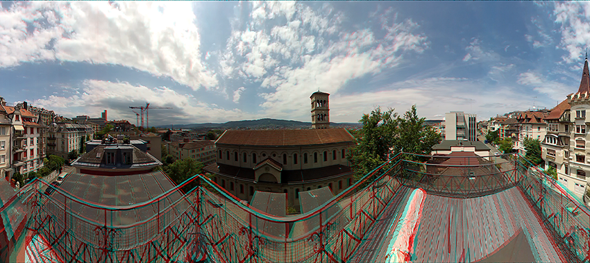
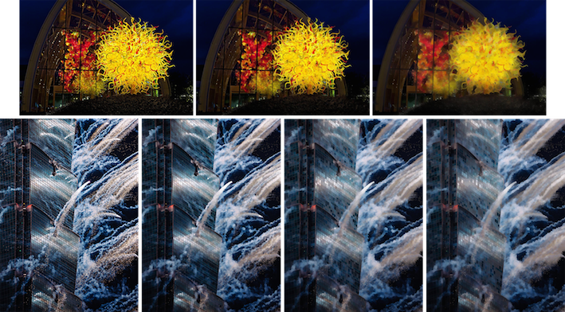

Hello!
I'm currently an AI/ML Engineer at Verisk Analytics at Jersey City, NJ, working on Document Intelligent Information Extraction (document layout analysis, OCR, etc.) and Media Forensics/Fraud detection.
I received my M.S. degree from the Department of Computer Science at National Taiwan University in 2017, supervised by Prof. Yung-Yu Chuang and Dr. Yen-Yu Lin from Academia Sinica, where I worked as a part-time research assistant. Before these, I received my B.S. also from the Department of Computer Science at National Taiwan University.
News
Oct. 2019: Back to Jersey City, NJ. Continuing my journey at Verisk
Jun. 2019: On-boarded as an AI/ML Engineer at Verisk. Relocated to Munich, Germany
Mar. 2018: Started my internship at Verisk.
Sep. 2017: Received Excellent Master Thesis Award from Image Processing and Pattern Recognition Society
Aug. 2017: Received M.S. in Computer Science and Information Engineering, National Taiwan University
Feb. 2017: One paper is accepted in CVPR 2017!
Publication
Deep Co-occurrence Feature Learning for Visual Object Recognition

Ya-Fang Shih*, Yang-Ming Yeh* (* indicates equal contribution), Yen-Yu Lin,
Ming-Fang Weng, Yi-Chang Lu, Yung-Yu Chuang
IEEE Conference on Computer Vision and Pattern Recognition (CVPR), 2017
Check out the paper and poster
Project
Stereo Panorama
Stereo images are image pairs for left and right eyes, from which people can perceive 3D stereo by looking at the corresponding one for the eyes. We developed a program to produce stereo panorama image pairs from a hand-held GoPro video. The work focused on implementing the flow-based image blending method proposed in Megastereo by Richardt et al and used the omnistereo method to extract the image strips for each eye.
Edge-preserving Image Blurring
This program blurred images while preserving the edges, texture and details in them. The results looked like watercolor painting pictures. It's an implementation of the paper, Edge-preserving multiscale image decomposition based on local extrema by Subr, Kartic, Cyril Soler, and Frédo Durand.
Color-Harmony Evaluation System

Do these clothes go well to wear together? This color evaluation system aimed to score how harmonic the colors are in people’s outfit. It focused on implementing the color harmonization algorithm proposed by Cohen-Or et al.
Distorted Movie Frame Classification

Photos taken by users in real life are usually different from the data we used in training models, often with heavy lightning and contrast distortion. This work focused on improving the classification accuracy of the photos of movie scenes shot by users, which had heavy distortion. Developed with MatConvNet.
Image Feature Matching on Android Devices

The speed to match features between images on Android platforms can be constrained by the programming language used. This work focused on implementing image feature matching with native language C++, and integrating it into the Java environment on Andriod systems. The resulting application took photos, detected and matched feature points in pictures instantly on mobile devices. Developed with Android NDK and OpenCV4Android.
DJ Board

How does your motion sound like? DJBoard is an interactive skateboard that people can mix their own music tracks by performing different body motions to trigger motion sensors. Developed with an infrared, pressure and ultrasonic sensors and a gyroscope on Arduino.